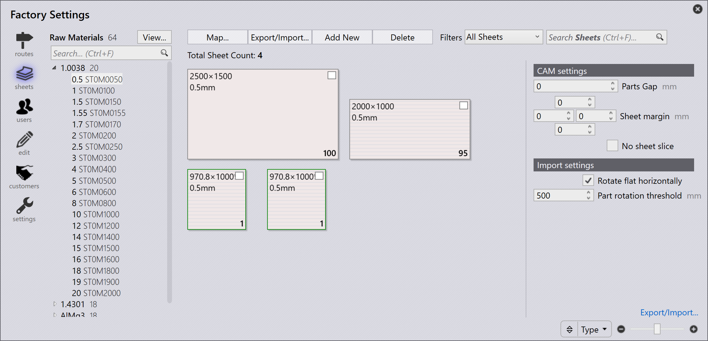
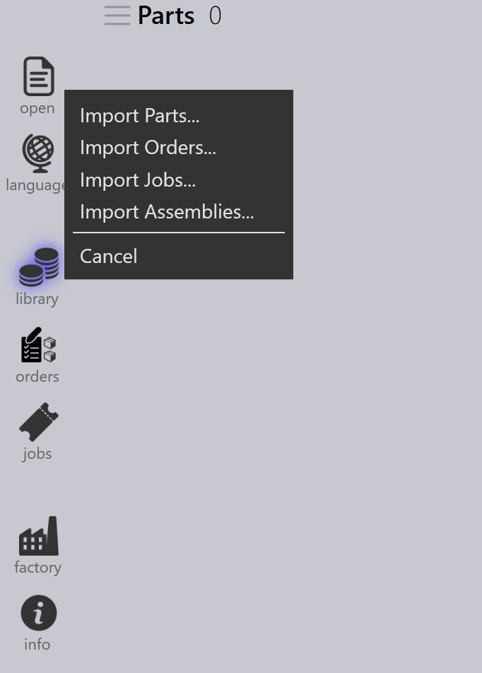

Flusso di lavoro
TruSmartCAM è un Manufacturing Execution System che gestisce e ottimizza i processi di produzione della lamiera. Un flusso di lavoro in TruSmartCAM è costituito da una serie di passaggi da seguire per completare un’attività o un processo specifico. È possibile personalizzare il flusso di lavoro per adattarlo a diversi processi di produzione e alle proprie esigenze specifiche. Il flusso di lavoro in TruSmartCAM include in genere i seguenti passaggi:
1. Configurare il sistema
Configurare TruSmartCAM in base al proprio ambiente di produzione. Questo passaggio fondamentale include la definizione delle macchine con le relative capacità e parametri, l’aggiunta dei materiali disponibili e degli intervalli di spessore, la configurazione delle librerie di attrezzaggio con punzoni e matrici, la creazione di schede di setup per le diverse configurazioni delle macchine e la gestione degli account utente con le autorizzazioni appropriate. Un sistema configurato correttamente garantisce un’elaborazione accurata e previene errori nelle fasi successive. Questa configurazione viene in genere eseguita una volta durante la distribuzione iniziale, con aggiornamenti periodici man mano che la fabbrica evolve.
Per ulteriori informazioni, vedere Add/Remove machine, Material, Sheets, Setup tooling e Configure users.

2. Aggiungere componenti alla libreria
Importare componenti CAD 2D o 3D nella Libreria componenti utilizzando formati supportati come file DXF, DWG o STEP. Durante l’importazione, TruSmartCAM analizza automaticamente la geometria del componente, ne convalida la producibilità, assegna la tecnologia di lavorazione della lamiera richiesta (laser, punzonatura o combinazione) e genera le miniature di anteprima. I componenti importati vengono visualizzati come riquadri nella vista della libreria, dove icone con codice colore indicano lo stato del componente, il tipo di tecnologia, i requisiti di materiale ed eventuali problemi rilevati. Questo sistema visivo consente di valutare rapidamente la disponibilità del componente a colpo d’occhio.
Per ulteriori informazioni, vedere Library.

3. Verificare componenti e attrezzaggio
Esaminare ogni componente importato per individuare potenziali problemi di produzione. Verificare che la geometria del componente sia valida e producibile, che le assegnazioni dell’attrezzaggio siano corrette e disponibili, che le selezioni di materiale e spessore corrispondano all’inventario e che le sequenze di piegatura siano definite correttamente per i componenti formati. Se vengono rilevati problemi, aprire il componente in TecZone per modificare la geometria, riassegnare o ottimizzare l’attrezzaggio, regolare i parametri di lavorazione o correggere le specifiche del materiale. Risolvere i problemi in questa fase previene ritardi di produzione e riduce gli scarti durante la lavorazione.
Per ulteriori informazioni, vedere Part state e Tooling status.

4. Organizzare i componenti in lavori
Raggruppare i componenti convalidati in lavori in base ai requisiti di produzione. Un lavoro rappresenta un’unità di produzione logica che può includere componenti provenienti da un singolo ordine cliente, componenti che condividono materiali e spessori comuni, componenti con scadenze di consegna simili o una combinazione basata sulla propria strategia di produzione. I lavori forniscono un contenitore per la pianificazione, consentono l’elaborazione in batch dei componenti correlati, permettono un utilizzo efficiente del materiale tramite il nesting e semplificano il tracciamento e la reportistica. I lavori possono essere creati manualmente selezionando i componenti oppure automaticamente in base a regole e filtri predefiniti.
Per ulteriori informazioni, vedere Jobs.

5. Pianificare i lavori sulle macchine di produzione
Una volta creato un lavoro, assegnarlo a una macchina di produzione appropriata. Considerare le capacità della macchina, incluse le tecnologie supportate (laser, punzonatura, torretta), la capacità di materiale e spessore, l’attrezzaggio disponibile e il carico di lavoro corrente. Se esistono più macchine idonee, selezionarla in base alla priorità di produzione, alla disponibilità della macchina, ai requisiti di setup o all’ottimizzazione dei costi. L’assegnazione può essere manuale per maggiore flessibilità oppure automatica in base a regole preconfigurate e algoritmi di pianificazione delle macchine.
Per ulteriori informazioni, vedere Plan job.

6. Rilasciare l’NC per i lavori
In questa fase vengono generati i layout di taglio. È ancora possibile modificare i layout e aggiungere tecnologie di taglio al layout utilizzando TecZone. Successivamente, esportare l’output NC e trasferirlo al controller della macchina o a una posizione di rete designata. Il lavoro viene quindi bloccato per impedire ulteriori modifiche e il suo stato viene aggiornato su "Released" per il tracciamento della produzione.
Per ulteriori informazioni, vedere Send/Recall NC.

7. Completare la produzione e finalizzare i lavori
Eseguire il lavoro rilasciato sulla macchina assegnata. Durante la produzione, l’operatore della macchina segue il programma NC, verifica la qualità dei componenti durante il taglio, gestisce il carico e lo scarico del materiale e affronta eventuali allarmi o problemi della macchina. Al termine della produzione, contrassegnare i singoli componenti o l’intero lavoro come completati in TruSmartCAM. Questo passaggio finale aggiorna i record di inventario, registra il tempo di produzione effettivo e l’utilizzo del materiale, archivia i dati del lavoro per la reportistica e l’analisi e completa il ciclo del flusso di lavoro.
Per ulteriori informazioni, vedere Mark complete.